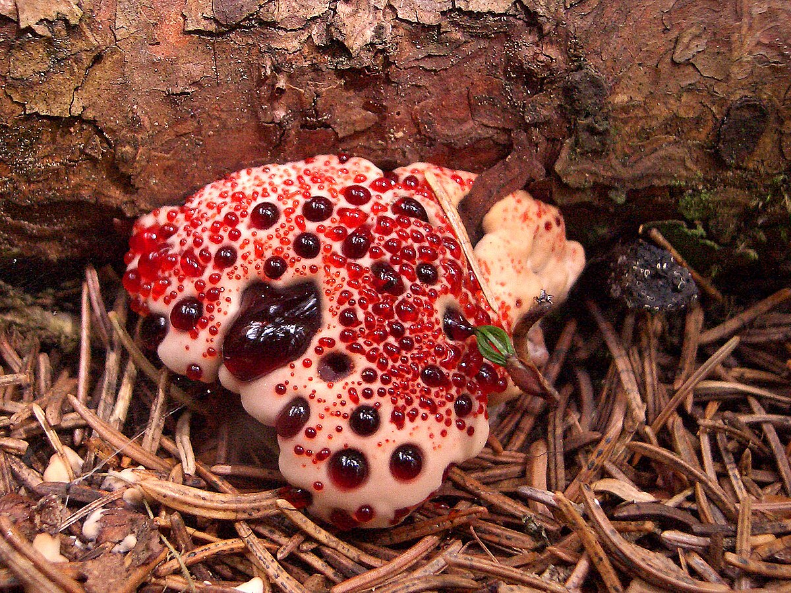

Mushroom.org
The Bleeding Tooth Mushroom
The fruit bodies typically have a funnel-shaped cap with a white edge, although the shape can vary
greatly. Young, moist fruit bodies can "bleed" bright red guttation droplets. Although the fruit bodies
are readily identifiable when young, they become brown and nondescript with age. It is a hydnoid
species, producing spores on the surface of vertical spines or tooth-like projections that hang from the
undersurface of the fruit bodies.
The species is found in North America, Europe, and was recently discovered in Iran (2008) and Korea
(2010). It is mycorrhizal, forming mutually beneficial relationships with a variety of coniferous trees,
growing on the ground singly, scattered, or in fused masses. They are considered inedible, but the
guttation droplets contain a pigment with anticoagulant properties similar to heparin.